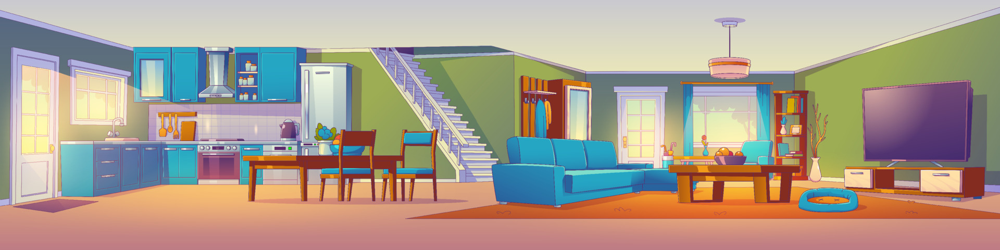

Check in is from 3 pm and check out is by 10 am.
If you find that anything is missing or you need more information about anything, please contact Charlotte or Bob on 01768 840963, 07517464506 or 07447995915. You’ll be lucky to get mobile reception at the house, but if you go up to the end of the drive, you should be able to send a text or make a call.
If you want to use the shower, first pull the cord at the end of the bath, to switch the red light on then press start and select water flow and temperature. The easiest way to switch it off is pulling the cord again. To get hot water for the rest of the property, ensure that both the switch to the right of the external door in the kitchen and the switch (labelled Water Heater) in the airing cupboard in the double bedroom are on. There is also a dial above the switch in the kitchen and a sliding switch which offers you constant, timer or off. It’s simplest to use constant and simply turn off the switches when you don’t need hot water.
The house is heated by electrical, wall-mounted radiators. Unless it is a very cold day, we will leave them off for your arrival. They can be set to come on with a timer, but again it’s simpler to just switch them to constant when you need them and adjust the temperature according to your needs. Please do not leave radiators on at a high temperature when you go out. The switch for the heater in the downstairs bathroom is in the cupboard under the stairs. Some anthracite and wood are stored in the lounge. If you would like to use the multi-fuel stove, use these and there’s more in the garden in the wooden store and bunker. Use anthracite and firewood to get it started. While you’re lighting it and it’s getting going it will be helpful to keep the doors slightly open; once it’s going, you should close the doors and use the anthracite bricks. Please empty ashes into the metal ash box by the fire and then into the metal ash bin in the garden. There’s a special vacuum cleaner for use on the fire (after it’s cooled!). It’s stored under the stairs, and is a largish, shiny metal cylinder with a plastic top. Please don’t use the Dyson for getting ashes up.
The front door is opened by the bronze key; also on the key ring are keys for the two doors which open onto the garden. When you leave, after locking all doors, please leave the keys locked in the key safe.
If you use more than one bin bag, please leave full bags, in the plastic dustbin in the garden. A private company takes away rubbish and they sort it for recycling, so you can just dispose of everything in the bin.
There are two cooker switches on the wall. The one on the left controls the hob. The one on the right controls the oven and grill.
The hub number and password are written on the back of the hub, which is kept on the glass-fronted cupboard in the lounge.
These will be checked between each stay, but if you find a light or control not working during your stay, please contact us using the above numbers.
After any guest, Ryebank Cottage is always cleaned and checked ready for the next guest. However, we do expect you to leave the property tidy and reasonably clean. There are cleaning materials in the under-stairs cupboard, should you need to use any of them.
